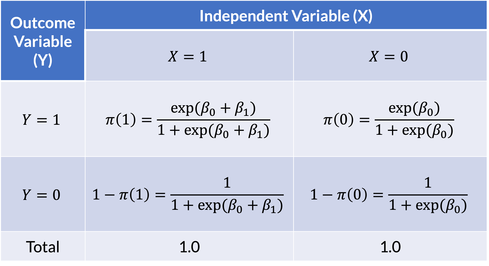
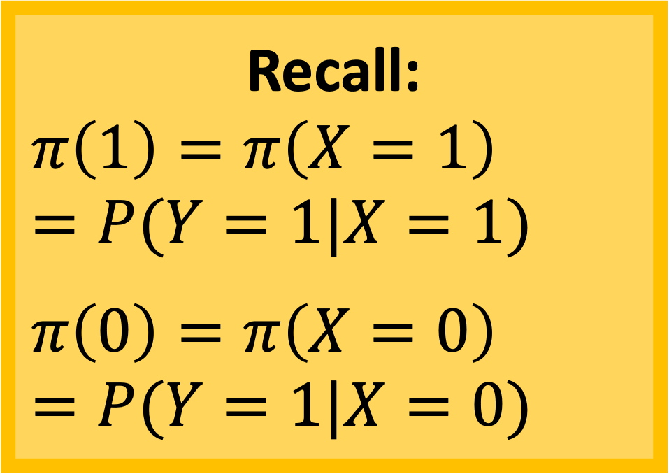
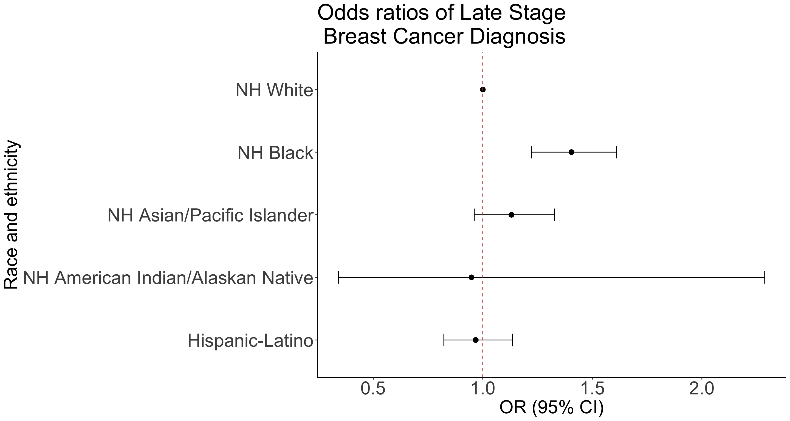

Lesson 8: Interpretations and Visualizations of Odds Ratios
2024-04-24
Last time to this time
Used the Wald test and Wald 95% confidence interval to interpret coefficients in a fitted model
This time: Interpret using odds ratio
Learning Objectives
Interpret odds ratios from fitted simple logistic regression model for a continuous explanatory variable.
Interpret odds ratios from fitted simple logistic regression model for a binary explanatory variable.
Interpret odds ratios from fitted simple logistic regression model for a multi-level categorical explanatory variable.
Report the odds ratio using a table and/or a forest plot.
So far we’ve looked at the association using the log-odds scale
For a population simple logistic regression model with a continuous predictor \[\text{logit}(\pi(X)) = \beta_0 + \beta_1 \cdot X\]
- \(\beta_0\): log-odds when X is 0
- \(\beta_1\): increase in log-odds for every 1 unit increase in X
For our fitted simple logistic regression model with a continuous predictor \[\text{logit}(\widehat{\pi}(X)) = \widehat{\beta}_0 + \widehat{\beta}_1 \cdot X\]
- \(\widehat{\beta}_0\): estimated log-odds of \(Y=1\) when X is 0.
- \(\widehat{\beta}_1\): estimated increase in log-odds of \(Y=1\) for every 1 unit increase in X
- Can use expected instead of estimated
Example: From last class
bc_reg = glm(Late_stage_diag ~ Age_c, data = bc, family = binomial)
tidy(bc_reg, conf.int=T) %>% gt() %>% tab_options(table.font.size = 35) %>%
fmt_number(decimals = 3)| term | estimate | std.error | statistic | p.value | conf.low | conf.high |
|---|---|---|---|---|---|---|
| (Intercept) | −0.989 | 0.023 | −42.637 | 0.000 | −1.035 | −0.944 |
| Age_c | 0.057 | 0.003 | 17.780 | 0.000 | 0.051 | 0.063 |
For our fitted simple logistic regression model with age as a predictor \[\text{logit}(\widehat{\pi}(Age^c)) = −0.989 + 0.057 \cdot Age^c\]
\(\widehat{\beta}_0\): The estimated log-odds is -0.989 when age is 61.71 years (95% CI: -1.035, -0.944)
\(\widehat{\beta}_1\): The estimated increase in log-odds is 0.057 for every 1 year increase in age (95% CI: 0.051, 0.063).
Poll Everywhere Question 1
We typically interpret our results using odds ratios
For our fitted simple logistic regression model with a continuous predictor \[\text{logit}(\widehat{\pi}(X)) = \widehat{\beta}_0 + \widehat{\beta}_1 \cdot X\]
How do we go from interpretations of \(\widehat{\beta}_0\) and \(\widehat{\beta}_1\) using log odds to odds ratios?
We will need to take the exponential of our model:
- \(\text{exp}(\widehat{\beta}_0)\): expected odds that \(Y=1\) when X is 0.
- \(\text{exp}(\widehat{\beta}_1)\): expected odds ratio that \(Y=1\) for every 1 unit increase in X
Important distinction:
- We take the inverse logit to find our predicted probability
- We take the exponential to interpret the odds/odds ratios
Intro/Recap of Interpreting Fitted Model
Interpret coefficients from fitted logistic regression model
- Goodness-of-fit of model should be assessed before summarizing findings (have not covered yet)
- In this lecture: assume model fits data well
The interpretation of the coefficients involves two issues:
- The functional relationship between the dependent variable and the independent variable (link function)
- Unit of change for the independent variable
We will learn the interpretation for
Binary independent variable
Categorical independent variable with multiple groups
- We looked at this for our race and ethnicity variable
Continuous independent variable
Learning Objectives
- Interpret odds ratios from fitted simple logistic regression model for a continuous explanatory variable.
Interpret odds ratios from fitted simple logistic regression model for a binary explanatory variable.
Interpret odds ratios from fitted simple logistic regression model for a multi-level categorical explanatory variable.
Report the odds ratio using a table and/or a forest plot.
Coefficient interpretation: Continuous Independent Variable
For simplicity, we assume the linear relationship between logit and continuous variable 𝑥
Again using simple logistic regression model to illustrate the interpretation of \(\widehat{\beta}\) for a continuous variable \(x\) \[\text{logit}(\widehat{\pi}(X)) = \widehat{\beta}_0 + \widehat{\beta}_1 \cdot X\]
The estimated slope coefficient, \(\widehat{\beta}_1\), is the expected change in the log odds for 1 unit increase in \(x\)
- Additional attention should be paid to picking a meaningful units of change in \(x\)
How do we get the odds ratio for X’s coefficient?
For \(\text{exp}(\widehat{\beta}_1)\)
- We compare \(X=x\) and \(X=x+1\),
- So we have \[\text{logit}(\widehat{\pi}(X = x)) = \widehat{\beta}_0 + \widehat{\beta}_1 \cdot x\] and \[\text{logit}(\widehat{\pi}(X = x+1)) = \widehat{\beta}_0 + \widehat{\beta}_1 \cdot (x+1)\]
- And… \[\begin{aligned} & \text{logit}(\widehat{\pi}(X = x+1)) - \text{logit}(\widehat{\pi}(X = x)) \\ & = \widehat{\beta}_0 + \widehat{\beta}_1 \cdot (x+1) - \big[\widehat{\beta}_0 + \widehat{\beta}_1 \cdot x \big] \\ &= \widehat{\beta}_0 + \widehat{\beta}_1 \cdot x + \widehat{\beta}_1 - \widehat{\beta}_0 - \widehat{\beta}_1 \cdot x \\ & = \widehat{\beta}_1 \end{aligned}\]
- Thus, \[\begin{aligned} \widehat{\beta}_1 & = \text{logit}(\widehat{\pi}(X = x+1)) - \text{logit}(\widehat{\pi}(X = x)) \\ \widehat{\beta}_1 & = \text{log}\Bigg(\dfrac{\widehat{\pi}(X=x+1)}{1-\widehat{\pi}(X=x+1)}\Bigg) - \text{log}\Bigg(\dfrac{\widehat{\pi}(X=x)}{1-\widehat{\pi}(X=x)}\Bigg) \\ \widehat{\beta}_1 & = \text{log}\left(\dfrac{\dfrac{\widehat{\pi}(X=x+1)}{1-\widehat{\pi}(X=x+1)}} {\dfrac{\widehat{\pi}(X=x)}{1-\widehat{\pi}(X=x)}}\right) \\ \text{exp}\big[\widehat{\beta}_1\big] & = \text{exp}\left[\text{log}\left(\dfrac{\text{odds}_{X=x+1}} {\text{odds}_{X=x}}\right) \right] \\ \text{exp}\big[\widehat{\beta}_1\big] & = \dfrac{\text{odds}_{X=x+1}} {\text{odds}_{X=x}} \\ \end{aligned}\]
Example: Interpretation of Age Coefficient/OR
\(\widehat{\beta}_1\) is 0.057, suggesting that one year increase in age is associated with 0.057 increase in log odds of receiving a late stage breast cancer diagnosis
\(\exp\left({\widehat{\beta}}_1\right)\) is 1.06, suggesting that one year increase in age is associated with 1.06 times the odds of receiving a late stage breast cancer diagnosis
For continuous covariates in logistic regression model, it is helpful to subtract 1 from the odds ratio and multiply by 100 to obtain the percentage change in odds for 1-unit increase.
- The estimated OR for age is 1.06, suggesting that a 1-year increase in age is associated with a 6% increase in the predicted odds of late stage diagnosis in the patient population
Example: Age and Late Stage Diagnosis (1/5)
Odds ratio from logistic regression
Compute the estimate and 95% confidence interval for odds ratio for late stage breast cancer diagnosis for every 1 year increase in age.
Needed steps:
- Fit the regression model
- Transform the coefficients into odds ratios
- Interpret the odds ratio
Example: Age and Late Stage Diagnosis (2/5)
Odds ratio from logistic regression
Compute the estimate and 95% confidence interval for odds ratio for late stage breast cancer diagnosis for every 1 year increase in age.
- Fit the regression model
Call:
glm(formula = Late_stage_diag ~ Age_c, family = binomial, data = bc)
Coefficients:
Estimate Std. Error z value Pr(>|z|)
(Intercept) -0.989422 0.023205 -42.64 <2e-16 ***
Age_c 0.056965 0.003204 17.78 <2e-16 ***
---
Signif. codes: 0 '***' 0.001 '**' 0.01 '*' 0.05 '.' 0.1 ' ' 1
(Dispersion parameter for binomial family taken to be 1)
Null deviance: 11861 on 9999 degrees of freedom
Residual deviance: 11510 on 9998 degrees of freedom
AIC: 11514
Number of Fisher Scoring iterations: 4Example: Age and Late Stage Diagnosis (3/5)
Odds ratio from logistic regression
Compute the estimate and 95% confidence interval for odds ratio for late stage breast cancer diagnosis for every 1 year increase in age.
- Transform the coefficients into odds ratios
- Option 1:
tidy()
tidy_bc_reg = tidy(bc_reg, conf.int=T, exponentiate = T)
tidy_bc_reg %>% gt() %>% tab_options(table.font.size = 35) %>%
fmt_number(decimals = 3)| term | estimate | std.error | statistic | p.value | conf.low | conf.high |
|---|---|---|---|---|---|---|
| (Intercept) | 0.372 | 0.023 | −42.637 | 0.000 | 0.355 | 0.389 |
| Age_c | 1.059 | 0.003 | 17.780 | 0.000 | 1.052 | 1.065 |
[1] 0.3551931 1.0520321Example: Age and Late Stage Diagnosis (4/5)
Odds ratio from logistic regression
Compute the estimate and 95% confidence interval for odds ratio for late stage breast cancer diagnosis for every 1 year increase in age.
- Transform the coefficients into odds ratios
- Option 2:
logistic.display()
Poll Everywhere Question 1
Example: Age and Late Stage Diagnosis (5/5)
Odds ratio from logistic regression
Compute the estimate and 95% confidence interval for odds ratio for late stage breast cancer diagnosis for every 1 year increase in age.
- Interpret the odds ratio
For every one year increase in age, there is an estimated 5.86% increase in the estimated odds of late stage breast cancer diagnosis (95% CI: 5.2%, 6.53%).
Transformations of continuous variable to make more interpretable
Sometimes a change in “1” unit may not be considered clinically interesting
For example, a 1 year increase in age or a 1 mm Hg increase in systolic blood pressure may be too small for a meaningful change in log odds
Instead, we may be interested to find out the log odds change for a increase of 10 years in age or 10 mm Hg in systolic blood pressure
On the other hand, if the range of x is small (say 0-1), than a change in 1 unit of 𝑥 is too large to be meaningful
We should be able to compute and interpret coefficients for a continuous independent covariate \(x\) for an arbitrary change of “c” units in \(x\)
Transformations of continuous variable to make more interpretable
The estimated log odds ratio for a change of c units in x can be obtained from \[\hat{g}\left(x+c\right)-\hat{g}\left(x\right)=c{\hat{\beta}}_1\]
- \(\widehat{OR}\left(c\right)=\exp\left(c{\hat{\beta}}_1\right)\)
The 95% CI for \(\widehat{OR}(c)\) is: \[\exp \left( c \hat{\beta}_1 \pm 1.96 \cdot c \cdot SE_{\hat{\beta}_1} \right)\]
The \(c\) is chosen to be a clinically meaningful unit change in \(x\)
The value of 𝑐 should be clearly specified in all tables and calculations
- Because the estimated OR and the corresponding CI depends on the choice of 𝑐 value
Example: 10 year increase in age and Late Stage Diagnosis
- What if we are interested in learning the OR corresponding to 10-year increase in age?
bc_reg = glm(Late_stage_diag ~ Age_c, data = bc, family = binomial)
tidy(bc_reg, conf.int=T) %>% gt() %>% tab_options(table.font.size = 35) %>%
fmt_number(decimals = 3)| term | estimate | std.error | statistic | p.value | conf.low | conf.high |
|---|---|---|---|---|---|---|
| (Intercept) | −0.989 | 0.023 | −42.637 | 0.000 | −1.035 | −0.944 |
| Age_c | 0.057 | 0.003 | 17.780 | 0.000 | 0.051 | 0.063 |
Example: 10 year increase in age and Late Stage Diagnosis
- What if we are interested in learning the OR corresponding to 10-year increase in age?
\[ \widehat{OR}\left(10\right)=\exp{\left(10\cdot{\hat{\beta}}_1\right)}=\exp{\left(0.56965\right)}=\mathrm{\mathrm{1.767}}\]
- The 95% CI for \(\widehat{OR}\left(10\right)\) is: \[\begin{aligned} \widehat{OR}\left(10\right) &=\exp{\left(10\cdot{\hat{\beta}}_1\pm1.96\cdot10\cdot SE_{\hat{\beta}_1} \right)} \\ &=\exp{\left(10\cdot0.056965\pm1.96\cdot10\cdot0.003204\right)}\\ &=(1.66,\ 1.88) \end{aligned}\]
Example: 10 year increase in age and Late Stage Diagnosis
- What if we are interested in learning the OR corresponding to 10-year increase in age?
bc2 = bc %>% mutate(Age_c_10 = Age_c/10)
bc_reg_10 = glm(Late_stage_diag ~ Age_c_10, data = bc2, family = binomial)
tidy(bc_reg_10, conf.int=T, exponentiate = T) %>% gt() %>% tab_options(table.font.size = 35) %>%
fmt_number(decimals = 3)| term | estimate | std.error | statistic | p.value | conf.low | conf.high |
|---|---|---|---|---|---|---|
| (Intercept) | 0.372 | 0.023 | −42.637 | 0.000 | 0.355 | 0.389 |
| Age_c_10 | 1.768 | 0.032 | 17.780 | 0.000 | 1.661 | 1.883 |
Last Note About Continuous Independent Variable
Notice that the logistic regression model suggests that logit is linear in the covariate
The model implies the additional risk of late stage breast cancer diagnosis for a 40 year-old compared to a 30 year-old is the same as the additional risk of late stage breast cancer diagnosis for a 60 year-old compared to a 50-year-old
This assumption may not be realistic
To address this, we may consider using higher order terms (e.g., \(x^2\), \(x^3\),…) or other nonlinear transformation(e.g., \(log(x)\))
Categorize the continuous variable may be another option
How do we get the odds for the intercept?
For \(\text{exp}(\widehat{\beta}_0)\)
When \(X=0\), we have \[\text{logit}(\widehat{\pi}(X=0)) = \widehat{\beta}_0\]
Thus, \[\begin{aligned} \widehat{\beta}_0 & = \text{logit}(\widehat{\pi}(X)) \\ \text{exp}\big[\widehat{\beta}_0\big] & = \text{exp}\big[\text{logit}(\widehat{\pi}(X))\big] \\ \text{exp}\big[\widehat{\beta}_0\big] & = \text{exp}\Bigg[\text{log}\Bigg(\dfrac{\widehat{\pi}(X)}{1-\widehat{\pi}(X)}\Bigg)\Bigg] \\ \text{exp}\big[\widehat{\beta}_0\big] & = \dfrac{\widehat{\pi}(X)}{1-\widehat{\pi}(X)} \\ \end{aligned}\]
Learning Objectives
- Interpret odds ratios from fitted simple logistic regression model for a continuous explanatory variable.
- Interpret odds ratios from fitted simple logistic regression model for a binary explanatory variable.
Interpret odds ratios from fitted simple logistic regression model for a multi-level categorical explanatory variable.
Report the odds ratio using a table and/or a forest plot.
Coefficient Interpretation: Binary Independent Variable
Independent variable \(x\) is a binary variable (\(x\) can take values: 0 or 1)
We are fitting the simple logistic regression model: \[\text{logit}\left(\pi(X) \right) = \beta_0 + \beta_1 \cdot I(X=1)\]
The logit difference is \(\beta_1\) for binary independent variable
- \(\beta_1\) represents the change/difference in the logit for \(x=1\) vs. \(x=0\)
It will be much easier to understand if we can interpret the coefficient using odds ratio (OR)
Binary: How do we interpret the coefficient? (I)
For individuals with \(X=0\): \[\text{logit}\left(\pi(X=0)\right)=\beta_0+\beta_1\times\left(0\right)=\beta_0\]
For individuals with \(X=1\): \[\text{logit}\left(\pi(X=1)\right)=\beta_0+\beta_1\times\left(1\right)=\beta_0 + \beta_1\]
To solve for \(\beta_1\), we take the difference of the logits: \[ \text{logit}\left(\pi(X=1)\right) - \text{logit}\left(\pi(X=0)\right) = \left( \beta_0 + \beta_1 \right) - \left( \beta_0 \right) = \beta_1\]
Binary: How do we interpret the coefficient? (II)
\[ \text{logit}\left(\pi(X=1)\right) - \text{logit}\left(\pi(X=0)\right) = \left( \beta_0 + \beta_1 \right) - \left( \beta_0 \right) = \beta_1\]
\[\begin{aligned} \beta_1&=l\mathrm{ogit}\left(\pi(X=1)\right)\ -l\mathrm{ogit}\left(\pi\left(X=0\right)\right) \\ \beta_1&=l\mathrm{og}\left(\dfrac{\pi(X=1)}{1-\pi(X=1)}\right)-l\mathrm{og}\left(\dfrac{\pi\left(X=0\right)}{1-\pi\left(X=0\right)}\right) \\ \beta_1&=\log{\left(\dfrac{\dfrac{\pi(X=1)}{1-\pi(X=1)}}{\dfrac{\pi(X=0)}{1-\pi(X=0)}}\right)} \\ \exp{\left(\beta_1\right)}&=\dfrac{\dfrac{\pi(X=1)}{1-\pi(X=1)}}{\dfrac{\pi(X=0)}{1-\pi(X=0)}} \end{aligned}\]
Review of Odds Ratio
Odds for a subject with \(X=1\): \[\text{odds}_1 = \dfrac{\pi(X=1)}{1-\pi(X=1)}\]
Odds for a subject with \(X=0\): \[\text{odds}_0 = \dfrac{\pi(X=0)}{1-\pi(X=0)}\]
Odds Ratio for \(X=1\) vs. \(X=0\): \[OR = \dfrac{\dfrac{\pi(X=1)}{1-\pi(X=1)}}{\dfrac{\pi(X=0)}{1-\pi(X=0)}}\]
How does this relate to a 2x2 table?
- 2x2 table with the respective logistic functions in each cell


Poll Everywhere Question 2
How does this relate to a 2x2 table?
\[ OR=\dfrac{a/c}{b/d}=\dfrac{\dfrac{\left(\dfrac{\exp{\left(\beta_0+\beta_1\right)}}{1+\exp{\left(\beta_0+\beta_1\right)}}\right)}{\left(\dfrac{1}{1+\exp(\beta_0+\beta_1)}\right)}}{\dfrac{\left(\dfrac{\exp(\beta_0)}{1+\exp(\beta_0)}\right)}{\left(\dfrac{1}{1+\exp{\left(\beta_0\right)}}\right)}}=\dfrac{\exp(\beta_0+\beta_1)}{\exp(\beta_0)}=e^{\beta_1} \]
Simple relationship between coefficient and odds ratio is a primary reason why we report OR for categorical data analysis.
For binary independent variable x, OR computed in logistic regression model is the same as OR computed using contingency table
Example: Binary age and Late Stage Diagnosis (I)
Odds ratio from logistic regression
What is the odds ratio of late stage breast cancer diagnosis for older individuals (>65 years old) compared to younger individuals (≤65 years old)?
Two options to calculate this value:
Option 1: Calculate \(\widehat{OR}\) from 2x2 contingency table
- Refer to Lesson 3 for this process
Option 2: Calculate \(\widehat{OR}\) from logistic regression
Needed steps for Option 2:
- Fit the regression model
- Transform the coefficients into odds ratios
- Interpret the odds ratio
Example: Binary age and Late Stage Diagnosis (I)
Odds ratio from logistic regression
What is the odds ratio of late stage breast cancer diagnosis for older individuals (>65 years old) compared to younger individuals (≤65 years old)?
- Fit the regression model
Example: Binary age and Late Stage Diagnosis (I)
Odds ratio from logistic regression
What is the odds ratio of late stage breast cancer diagnosis for older individuals (>65 years old) compared to younger individuals (≤65 years old)?
- Transform the coefficients into odds ratios
age_bin_tidy = tidy(age_bin_glm, conf.int=T, exponentiate = T)
age_bin_tidy %>% gt() %>%
tab_options(table.font.size = 35) %>%
fmt_number(decimals = 3)| term | estimate | std.error | statistic | p.value | conf.low | conf.high |
|---|---|---|---|---|---|---|
| (Intercept) | 0.297 | 0.031 | −39.608 | 0.000 | 0.280 | 0.315 |
| Age_binary | 1.875 | 0.045 | 13.928 | 0.000 | 1.716 | 2.048 |
Poll Everywhere Question 3
Example: Binary age and Late Stage Diagnosis (I)
Odds ratio from logistic regression
What is the odds ratio of late stage breast cancer diagnosis for older individuals (>65 years old) compared to younger individuals (≤65 years old)?
- Interpret the odds ratio
The estimated odds of late stage breast cancer among individuals over 65 years old is 1.87 (95% CI: (1.72, 2.05)) times that of individuals 65 years or younger.
Learning Objectives
Interpret odds ratios from fitted simple logistic regression model for a continuous explanatory variable.
Interpret odds ratios from fitted simple logistic regression model for a binary explanatory variable.
- Interpret odds ratios from fitted simple logistic regression model for a multi-level categorical explanatory variable.
- Report the odds ratio using a table and/or a forest plot.
Coefficient Interpretation: Multi-group Categorical Variable
Independent variable \(x\) is a multi-level categorical variable
Let’s say \(X\) takes values: a, b, c, or d
We are fitting the simple logistic regression model: \[\text{logit}\left(\pi(X) \right) = \beta_0 + \beta_1 \cdot I(X=b) + \beta_2 \cdot I(X=c) + \beta_3 \cdot I(X=d)\]
- Where \(a\) is our reference group
The logit difference is \(\beta_1\) for binary independent variable
- \(\beta_1\) represents the change/difference in the logit for \(x=b\) vs. \(x=a\)
It will be much easier to understand if we can interpret the coefficient using odds ratio (OR)
Coefficient Interpretation: Multi-group Categorical Variable
We are fitting the simple logistic regression model with reference group \(a\): \[\text{logit}\left(\pi(X) \right) = \beta_0 + \beta_1 \cdot I(X=b) + \beta_2 \cdot I(X=c) + \beta_3 \cdot I(X=d)\]
- \(\beta_0\): the log-odds of event \(Y=1\) for group \(a\)
- \(\beta_1\): the difference in log-odds of event \(Y=1\) comparing group \(b\) to group \(a\)
- \(\beta_2\): the difference in log-odds of event \(Y=1\) comparing group \(c\) to group \(a\)
- \(\beta_3\): the difference in log-odds of event \(Y=1\) comparing group \(d\) to group \(a\)
Multi-level categorical: How do we interpret the coefficient? (II)
\[ \text{logit}\left(\pi(X=c)\right) - \text{logit}\left(\pi(X=a)\right) = \left( \beta_0 + \beta_1\cdot 0 + \beta_2\cdot 1 + \beta_3\cdot 0 \right) - \left( \beta_0 + \beta_1\cdot 0 + \beta_2\cdot 0 + \beta_3\cdot 0 \right) = \beta_2\]
\[\begin{aligned} \beta_2&=l\mathrm{ogit}\left(\pi(X=c)\right)\ -l\mathrm{ogit}\left(\pi\left(X=a\right)\right) \\ \beta_2&=l\mathrm{og}\left(\dfrac{\pi(X=c)}{1-\pi(X=c)}\right)-l\mathrm{og}\left(\dfrac{\pi\left(X=a\right)}{1-\pi\left(X=a\right)}\right) \\ \beta_2&=\log{\left(\dfrac{\dfrac{\pi(X=c)}{1-\pi(X=c)}}{\dfrac{\pi(X=a)}{1-\pi(X=a)}}\right)} \\ \exp{\left(\beta_2\right)}&=\dfrac{\dfrac{\pi(X=c)}{1-\pi(X=c)}}{\dfrac{\pi(X=a)}{1-\pi(X=a)}} \end{aligned}\]
Coefficient Interpretation: Multi-group Categorical Variable
We are fitting the simple logistic regression model with reference group \(a\): \[\text{logit}\left(\pi(X) \right) = \beta_0 + \beta_1 \cdot I(X=b) + \beta_2 \cdot I(X=c) + \beta_3 \cdot I(X=d)\]
- \(\exp\left(\beta_0\right)\): the odds of event \(Y=1\) for group \(a\)
- \(\exp\left(\beta_1\right)\): the odds of event \(Y=1\) for group \(b\) is \(\exp\left(\beta_1\right)\) times the odds of event \(Y=1\) for group \(a\)
- \(\exp\left(\beta_2\right)\): the odds of event \(Y=1\) for group \(c\) is \(\exp\left(\beta_2\right)\) times the odds of event \(Y=1\) for group \(a\)
- \(\exp\left(\beta_3\right)\): the odds of event \(Y=1\) for group \(d\) is \(\exp\left(\beta_3\right)\) times the odds of event \(Y=1\) for group \(a\)
How do we pick the reference group?
The choice can be more apparent for multi-group categorical independent variables within studies
For example, if we want to evaluate the association between clinical response and four treatments.
The treatment variable has 4 categories: “active treatment A”, “active treatment B”, “active treatment C” and “Placebo treatment”
The investigator is interested in comparing each of the three active treatment with the placebo treatment
Then the placebo treatment should be picked as the reference group
Example: Late stage diagnosis and race and ethnicity
Chose Non-Hispanic White individuals as reference group
Underlying health disparities linked to racism in healthcare and in clinical studies
There is evidence that white individuals receive a certain standard of care that is not paralleled for POC Mateo and Williams (2021)

Example: Late stage diagnosis and race and ethnicity
Odds ratio from logistic regression
What is the odds ratio of late stage breast cancer diagnosis for Non-Hispanic Asian/Pacific Islander individuals compared to Non-Hispanic White individuals?
Needed steps:
- Fit the regression model
- Transform the coefficients into odds ratios
- Interpret the odds ratio
Example: Late stage diagnosis and race and ethnicity
Odds ratio from logistic regression
What is the odds ratio of late stage breast cancer diagnosis for Non-Hispanic Asian/Pacific Islander individuals compared to Non-Hispanic White individuals?
- Fit the regression model
Example: Late stage diagnosis and race and ethnicity
Odds ratio from logistic regression
What is the odds ratio of late stage breast cancer diagnosis for Non-Hispanic Asian/Pacific Islander individuals compared to Non-Hispanic White individuals?
- Transform the coefficients into odds ratios
RE_tidy = tidy(RE_glm, conf.int=T, exponentiate = T)
RE_tidy %>% gt() %>%
tab_options(table.font.size = 35) %>%
fmt_number(decimals = 3)| term | estimate | std.error | statistic | p.value | conf.low | conf.high |
|---|---|---|---|---|---|---|
| (Intercept) | 0.372 | 0.026 | −37.553 | 0.000 | 0.353 | 0.392 |
| Race_EthnicityHispanic-Latino | 0.968 | 0.082 | −0.398 | 0.691 | 0.822 | 1.135 |
| Race_EthnicityNH American Indian/Alaskan Native | 0.948 | 0.476 | −0.111 | 0.911 | 0.342 | 2.287 |
| Race_EthnicityNH Asian/Pacific Islander | 1.131 | 0.082 | 1.497 | 0.134 | 0.961 | 1.327 |
| Race_EthnicityNH Black | 1.405 | 0.070 | 4.826 | 0.000 | 1.223 | 1.611 |
Example: Late stage diagnosis and race and ethnicity
Odds ratio from logistic regression
What is the odds ratio of late stage breast cancer diagnosis for Non-Hispanic Asian/Pacific Islander individuals compared to Non-Hispanic White individuals?
- Interpret the odds ratio
The estimated odds of late stage breast cancer among Non-Hispanic Asian/Pacific Islander individuals is 1.13 (95% CI: (0.96, 1.33)) times that of Non-Hispanic White individuals.
What if you want to compare other groups?
What if we want to estimate OR comparing Non-Hispanic Asian Pacific Islander to Non-Hispanic Black individuals?
Option 1: Change reference group and refit the model (maybe the easiest option)
Option 2: Estimate OR using fitted coefficients (\(\widehat{\beta}\)’s) in the current model: \[\begin{aligned} \text{log}\left( OR (\text{NH API}, \text{NH B}) \right) &= \text{logit}\left(\pi \left(X = \text{NH API}\right)\right) - \text{logit}\left(\pi \left(X = \text{NH B}\right)\right) \\ & = \left[\beta_0 + \beta_3 \cdot 1\right] - \left[\beta_0 + \beta_4 \cdot 1 \right] \\ \text{log}\left( \widehat{OR} (\text{NH API}, \text{NH B}) \right) &= \widehat{\beta}_3 - \widehat{\beta}_4 \\ \widehat{OR} (\text{NH API}, \text{NH B}) &= \exp \left( \widehat{\beta}_3 - \widehat{\beta}_4 \right) \end{aligned}\]
Poll Everywhere Question 5
What if you want to compare other groups? Option 1
bc3 = bc %>%
mutate(Race_Ethnicity = relevel(Race_Ethnicity, ref = "NH Black"))
RE_glm2 = glm(Late_stage_diag ~ Race_Ethnicity, data = bc3,
family = binomial)
tidy(RE_glm2, conf.int=T, exponentiate = T) %>% gt() %>%
tab_options(table.font.size = 38) %>%
fmt_number(decimals = 3)| term | estimate | std.error | statistic | p.value | conf.low | conf.high |
|---|---|---|---|---|---|---|
| (Intercept) | 0.523 | 0.065 | −9.934 | 0.000 | 0.459 | 0.594 |
| Race_EthnicityNH White | 0.712 | 0.070 | −4.826 | 0.000 | 0.621 | 0.818 |
| Race_EthnicityHispanic-Latino | 0.689 | 0.102 | −3.664 | 0.000 | 0.564 | 0.840 |
| Race_EthnicityNH American Indian/Alaskan Native | 0.675 | 0.479 | −0.819 | 0.413 | 0.242 | 1.641 |
| Race_EthnicityNH Asian/Pacific Islander | 0.805 | 0.102 | −2.131 | 0.033 | 0.659 | 0.982 |
Learning Objectives
Interpret odds ratios from fitted simple logistic regression model for a continuous explanatory variable.
Interpret odds ratios from fitted simple logistic regression model for a binary explanatory variable.
Interpret odds ratios from fitted simple logistic regression model for a multi-level categorical explanatory variable.
- Report the odds ratio using a table and/or a forest plot.
How to present odds ratios: Table
tbl_regression()in thegtsummarypackage is helpful for presenting the odds ratios in a clean way
library(gtsummary)
tbl_regression(RE_glm, exponentiate = TRUE) %>%
as_gt() %>% # allows us to use tab_options()
tab_options(table.font.size = 38)| Characteristic | OR1 | 95% CI1 | p-value |
|---|---|---|---|
| Race_Ethnicity | |||
| NH White | — | — | |
| Hispanic-Latino | 0.97 | 0.82, 1.14 | 0.7 |
| NH American Indian/Alaskan Native | 0.95 | 0.34, 2.29 | >0.9 |
| NH Asian/Pacific Islander | 1.13 | 0.96, 1.33 | 0.13 |
| NH Black | 1.40 | 1.22, 1.61 | <0.001 |
| 1 OR = Odds Ratio, CI = Confidence Interval | |||
How to present odds ratios: Forest Plot Setup
Attaching package: 'broom.helpers'The following objects are masked from 'package:gtsummary':
all_categorical, all_continuous, all_contrasts, all_dichotomous,
all_interaction, all_interceptsRE_tidy = tidy_and_attach(RE_glm, conf.int=T, exponentiate = T) %>%
tidy_remove_intercept() %>%
tidy_add_reference_rows() %>% tidy_add_estimate_to_reference_rows() %>%
tidy_add_term_labels()
glimpse(RE_tidy)Rows: 5
Columns: 16
$ term <chr> "Race_EthnicityNH White", "Race_EthnicityHispanic-Latin…
$ variable <chr> "Race_Ethnicity", "Race_Ethnicity", "Race_Ethnicity", "…
$ var_label <chr> "Race_Ethnicity", "Race_Ethnicity", "Race_Ethnicity", "…
$ var_class <chr> "factor", "factor", "factor", "factor", "factor"
$ var_type <chr> "categorical", "categorical", "categorical", "categoric…
$ var_nlevels <int> 5, 5, 5, 5, 5
$ contrasts <chr> "contr.treatment", "contr.treatment", "contr.treatment"…
$ contrasts_type <chr> "treatment", "treatment", "treatment", "treatment", "tr…
$ reference_row <lgl> TRUE, FALSE, FALSE, FALSE, FALSE
$ label <chr> "NH White", "Hispanic-Latino", "NH American Indian/Alas…
$ estimate <dbl> 1.0000000, 0.9678002, 0.9484848, 1.1310170, 1.4046741
$ std.error <dbl> NA, 0.08224948, 0.47558680, 0.08224988, 0.07041472
$ statistic <dbl> NA, -0.3979312, -0.1112089, 1.4968682, 4.8257715
$ p.value <dbl> NA, 6.906809e-01, 9.114507e-01, 1.344276e-01, 1.394623e…
$ conf.low <dbl> NA, 0.8223138, 0.3417844, 0.9612074, 1.2226824
$ conf.high <dbl> NA, 1.135332, 2.286596, 1.327092, 1.611466How to present odds ratios: Forest Plot
ggplot(data=RE_tidy, aes(y=label, x=estimate, xmin=conf.low, xmax=conf.high)) +
geom_point(size = 3) + geom_errorbarh(height=.2) +
geom_vline(xintercept=1, color='#C2352F', linetype='dashed', alpha=1) +
theme_classic() +
labs(x = "OR (95% CI)", y = "Race and ethnicity",
title = "Odds ratios of Late Stage \n Breast Cancer Diagnosis") +
theme(axis.title = element_text(size = 25), axis.text = element_text(size = 25), title = element_text(size = 25))Warning: Removed 1 row containing missing values or values outside the scale range
(`geom_errorbarh()`).
References
Lesson 8: Interpretations and Visualizations of Odds Ratios